Create with purpose.
Understand the workflow, the people using it and the friction worth removing.
A proposed Malaysian software studio
Digital Solutions for Growing Businesses.
An identity and product vision for everyday business.

STACKED / DARKPreserve the SVG proportions. Give the mark at least one spine-width of clear space. No stretching, rotation or effects.
Start with the work you want to make simpler
A clearer website. A smoother workflow.
A useful tool for your next chapter.
Public email, phone and website are pending owner configuration.
Kezuvio Labs is a provisional identity, not a registration or trademark-clearance claim.